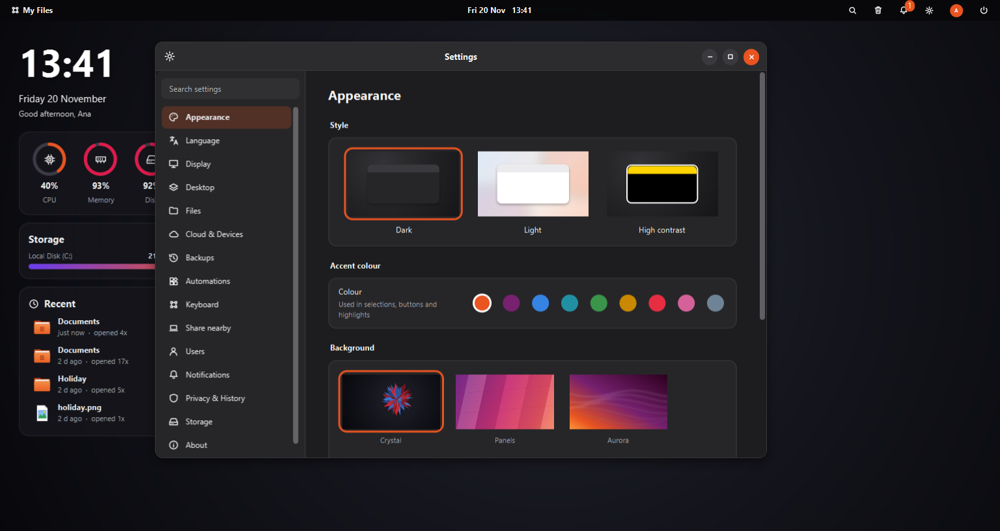
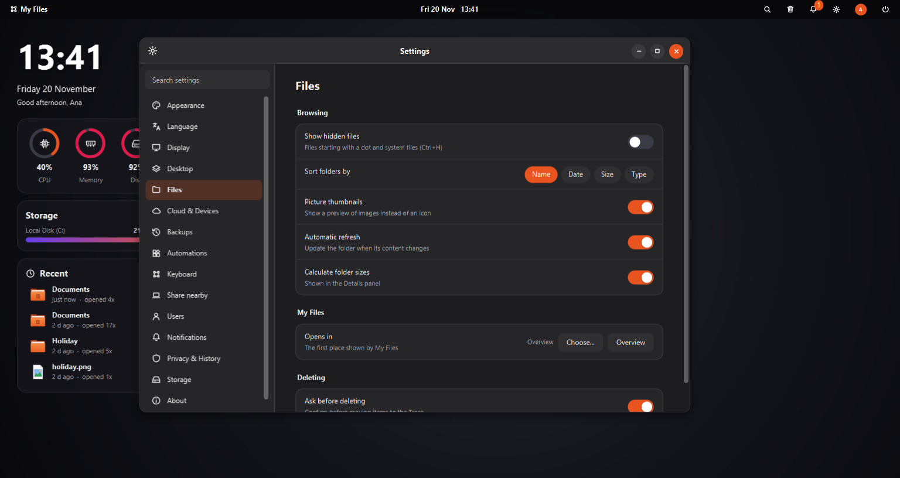

Settings
Open Settings with the gear in the top bar or Ctrl+,. The search box at the top of the list finds a page by any word ("wallpaper", "usb", "shortcuts"…). Changes are saved immediately.

| Page | What you can change |
|---|---|
| Appearance | Dark, light or high-contrast style, 9 accent colours, 5 wallpapers or your own picture, text size. |
| Language | System language or one of 9 languages, with Restart now. |
| Display | Brightness, night light, full screen, animations (also off when the system asks for fewer animations). |
| Desktop | Widgets on/off, widget style (Glass, Solid, Minimal, Outline, Accent colour), clock with 24 h and seconds. |
| Files | Show hidden files, sorting, thumbnails, automatic refresh, folder sizes, start folder, confirm before deleting. |
| Cloud & Devices | WebDAV accounts, synced folders, external devices, network servers. See Cloud, devices and network. |
| Backups | Backup jobs. See Backups. |
| Automations | Rules for folders. See Tags, timeline and automations. |
| Keyboard | Every shortcut, with Change, Default and Restore all shortcuts. See Keyboard shortcuts. |
| Share nearby | On/off, the name others see, the folder for received files. See Share nearby. |
| Users | Name, full name, e-mail, photo or avatar colour, usage statistics. |
| Notifications | Banners on/off, and a test notification. |
| Privacy & History | Activity history on/off, how many items Recent remembers, clear history, clear favourites, clear the error log. |
| Storage | Drives, Trash, copy of the settings (export and import, see Your data and privacy), the folder of the database, reset all settings. |
| System (since 3.11) | FileExp files (.fexp, .fexc, .fexr) open in FileExp with their own icon, "Open in FileExp" on folders, the fileexp command, opening when you sign in. See System below. |
| About | Version, Java and JavaFX versions, memory, credits. Licences and legal notices (each full text and the date they were accepted), Run the assistant again. Diagnostics: how many problems the error log has, Copy report and the log folder. |

Resetting#
Settings › Storage › Reset settings puts the preferences of Appearance, Display, Desktop, Files, Notifications and Privacy & History back to the default (language, keyboard shortcuts and Share nearby keep their values). Your files, tags, favourites, history and backups are not touched.
System (since 3.11)#
Settings › System connects FileExp with your system. Everything is done for your account only, without administrator rights, and can be turned off here at any time. Each switch shows the real state (read in the background: "Reading..."); if a change fails, the message appears and the switch goes back to the real state.
| Option | What it does | By default |
|---|---|---|
| Copies of the settings (.fexp) | A double click on a .fexp opens the import of the settings in FileExp, and the file has the FileExp icon | On (by the installer and the assistant) |
| Smart collections (.fexc) | A double click adds the collection (see Sharing collections and rules) | On |
| Automation rules (.fexr) | A double click adds the rule | On |
| "Open in FileExp" on folders | Right-click on a folder, or on the empty space of a folder, in File Explorer (Windows only) | Off |
The fileexp command | In a new terminal, fileexp opens FileExp and fileexp <folder> opens that folder (adds the FileExp folder to the user PATH) | Off |
| Open when you sign in | FileExp opens when you sign in to the computer | Off |
- Associations made by the installer (for all users) show "Made by the installer" and are removed on uninstall; they are not turned off here.
- When turning something off, FileExp deletes only what points to it; entries of other programs and the other folders of the PATH stay as they were.
- In the development version (not installed) and on macOS, the page explains that it is not available.
- One FileExp: starting FileExp again, a double click on a FileExp file, "Open in FileExp" or
fileexp <folder>hand the request to the FileExp that is already open, which comes to the front.